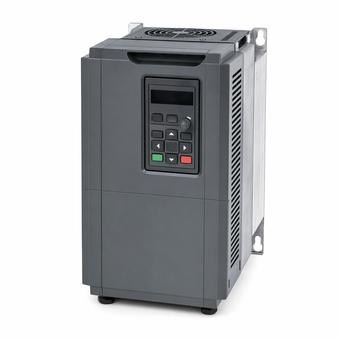

VFD vs. Soft Starter: What Each One Actually Solves
Both reduce starting current, which is why they get compared. Only one of them changes anything after the motor is up to speed, and that difference decides the choice far more often than the starting current does.

Key takeaways
- A soft starter manages the start and then gets out of the way. A VFD controls the motor continuously.
- Only a VFD can reduce speed, and on a pump or fan that is where almost all the energy saving is, because power follows roughly the cube of speed.
- A VFD can deliver full torque at low speed. A soft starter reduces torque as it reduces voltage, which is what makes it unsuitable for hard-starting loads.
- A VFD brings harmonics, cable length limits and bearing-current risk that a soft starter does not.
On this page · 7 sections
What each one does
A motor started directly across the line draws a large inrush — commonly six to eight times full-load current — and develops a sharp torque step. Both devices exist to soften that, and they do it by different means with very different consequences.
A soft starter is a set of thyristors in series with the motor that ramps the applied voltage up over a few seconds. Once the motor reaches speed, the soft starter has done its job; most then close a bypass contactor and take the semiconductors out of the circuit entirely, so the motor runs directly across the line as if the starter were not there.
A variable frequency drive rectifies the incoming AC to DC and synthesises a new AC waveform at whatever frequency and voltage it chooses. It is in the circuit permanently, and because it controls frequency it controls speed — during the start and for as long as the motor runs.
That is the distinction that matters. The starting behaviour is a side effect of what a VFD is; it is the entire purpose of a soft starter.
The energy argument
If the load is a centrifugal pump or fan, this is usually the whole decision, and it has nothing to do with starting.
Flow in a centrifugal machine is roughly proportional to speed, while the power required follows roughly the cube of speed. Run a fan at 80 percent speed and it absorbs around half the power. Run it at 50 percent and it absorbs around an eighth. Those are the affinity laws, and they are why variable speed is transformative on this class of load.
Now compare the alternative. A soft-started fan runs at full speed whenever it runs, and flow is reduced by throttling a damper or a valve — which is to say by deliberately wasting the excess. The motor keeps drawing close to full power while the system destroys the surplus across a restriction.
So on a throttled pump or fan, a VFD is not a more expensive way of achieving the same outcome; it is a different outcome. On a load that runs at one speed whenever it runs — a conveyor, a compressor with its own unloading arrangement, a crusher — this argument disappears entirely, and with it most of the case for a VFD.
Torque and hard-starting loads
The second real difference is what torque is available while the motor comes up to speed.
A soft starter reduces current by reducing voltage, and motor torque falls roughly with the square of voltage. Reduce the voltage to 50 percent to halve the current and the available torque falls to about a quarter. If the load needs more than that to break away, the motor stalls, the ramp times out, and nothing starts. That is the whole reason a soft starter is unsuitable for a loaded conveyor or a machine with high static friction.
A VFD does not face that trade-off, because it reduces frequency alongside voltage and keeps the magnetic flux where it should be. It can develop full rated torque from very low speed while drawing current close to full-load rather than a multiple of it. For a high-inertia or high-breakaway load, that capability is the reason to choose it even where variable speed is not wanted in operation.
What a VFD brings with it
A VFD is the more capable device and it is not free of consequences. These are the ones that cause problems after commissioning.
Harmonics. The rectifier front end draws non-sinusoidal current, injecting harmonic currents into the supply. On a system with many drives relative to its source capacity this shows up as voltage distortion, transformer heating and neutral current, and it is assessed against IEEE 519 limits. Mitigation — line reactors, multi-pulse arrangements, active front ends, filters — is a cost that belongs in the comparison. A soft starter in bypass draws essentially sinusoidal current and contributes none of this in normal running.
Cable length and reflected waves. The fast switching edges a drive produces travel down the motor cable and reflect from the motor terminals, which can roughly double the voltage seen by the winding insulation. There is a practical cable length limit for any drive and motor combination, beyond which output filtering or an inverter-duty motor is required. A soft starter has no equivalent limit.
Bearing currents. Common-mode voltage from the drive can drive current through the motor bearings, pitting the races. Insulated bearings, shaft grounding rings or a filter address it, and on larger machines this is a specification item rather than an afterthought.
Motor suitability. Continuous low-speed running reduces the motor’s own cooling if it is shaft-mounted-fan cooled, and the voltage stress asks more of the insulation. Inverter-duty construction exists for this reason.
Choosing between them
The decision resolves quickly with three questions, in order.
Does the process benefit from varying speed? On a throttled pump or fan, yes, decisively, and the energy case usually settles it. A VFD.
Does the load need substantial torque to break away? If so, a soft starter will struggle regardless of ramp settings, and a VFD is the answer even for a fixed-speed application.
Neither? Then the requirement is genuinely only to limit inrush — a fixed-speed load that is easy to start, often driven by a utility demand charge or a limit on a generator or soft supply. A soft starter is smaller, cheaper, simpler, generates no harmonics in bypass, and imposes nothing on the motor or the cable. It is the right answer, and specifying a VFD here buys complexity for no return.
Common mistakes
Comparing the two on starting current alone, which is the smallest of the real differences. Expecting a soft starter to save energy in running, when in bypass it is electrically absent. Specifying a soft starter for a high-breakaway load and then adjusting ramp settings to fix a torque shortfall that settings cannot fix. Reducing fan or pump flow by throttling while a VFD is installed, which gives up almost all of the benefit. Omitting harmonic assessment where many drives sit on one transformer. Exceeding the drive-to-motor cable length limit without output filtering. Using a standard motor for continuous low-speed operation or long-cable drive duty. Assuming a VFD is the better device in general rather than the better device for a particular job.
Frequently asked questions
What is the difference between a VFD and a soft starter?
A soft starter ramps voltage to limit inrush during starting and then typically closes a bypass contactor, leaving the motor running directly across the line. A VFD synthesises its own AC waveform and controls frequency, so it controls speed continuously while the motor runs. The starting behaviour is incidental to what a VFD is and is the entire purpose of a soft starter.
Does a soft starter save energy?
Not in running. Once the motor is up to speed a soft starter is normally bypassed and electrically absent, so the motor consumes what it would have consumed anyway. Energy saving on pumps and fans comes from reducing speed, which only a VFD can do, and it is substantial because the power required follows roughly the cube of speed.
Can a soft starter handle a hard-starting load?
Often not. A soft starter reduces current by reducing voltage, and torque falls with roughly the square of voltage, so halving the current leaves about a quarter of the torque. If the load needs more than that to break away the motor stalls and the ramp times out. A VFD reduces frequency with voltage and can develop full torque at low speed, which is why it suits high-breakaway and high-inertia loads even at fixed speed.
What problems does a VFD introduce?
Harmonic currents from its rectifier front end, assessed against IEEE 519 and often needing reactors or filters; a cable length limit, because fast switching edges reflect from the motor terminals and can nearly double the winding voltage; bearing currents from common-mode voltage, addressed with insulated bearings or shaft grounding; and greater demands on the motor itself, which is why inverter-duty construction exists. A soft starter in bypass introduces none of these.
Next steps
The starting current itself is covered in generator sizing where it usually matters most, and the harmonic consequences in harmonics and IEEE 519.
Run the numbers
- Motor Starting CalculatorStarting current and voltage dip for each method.
- Inrush Current CalculatorThe inrush both devices exist to limit.
- HP to kW CalculatorMotor rating conversion.
Cite or link to this guide
Free to quote with attribution. Suggested citation: Voltfield Editorial Team, “VFD vs. Soft Starter: What Each One Actually Solves,” Voltfield, updated November 3, 2026. https://voltfield.org/guide-vfd-vs-soft-starter.html
Get new guides by email
One short email when a new guide or calculator is published, at most once a month. Your address is used for nothing else.